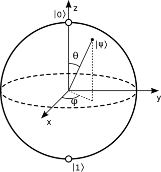

كرة بلوخ (bloch sphere)[1]
ما هي هذه الكرة ولماذا نستخدمها:
.هي كرة نستخدمها لتمثيل حالة الكيوبت الواحد، أي متجه يمكن استخدامه لتمثيل حالة الكيوبت يمكن تمثيله على شكل نقطة على هذه الكرة، وعند استخدام أي بوابة من البوابات الكمومية يمكن تمثيلها بانعكاس أو استدارة لهذه الكرة.
ولكن السؤال كيف يمكننا تمثيل متجه ثنائي الأبعاد على كرة ثلاثية الأبعاد؟
تمثيل الكيوبت على كرة بلوخ
بالرجوع إلى الوراء، اننا نعلم ان يمكن تمثيل حالة الكيوبت بهذا المتجه
\(\begin{bmatrix}\alpha\\\beta\end{bmatrix}\)
ومن هذه المعادلة لا يوجد قيود بأن نمثل الكيوبت فقط بأرقام بين الصفر والواحد بل يمكننا استخدام الأعداد السالبة والأعداد المركبة. باستخدام الأعداد المركبة يمكننا تمثيل حالة الكيوبت بهذا المتجه
\(\begin{bmatrix}a_{1}+ib_{1}\\a_{2}+ib_{2}\end{bmatrix}\)
وبهذه الحالة فاننا نحتاج الى اربع متغيرات لكي نمثل حالة الكيوبت، فكيف يمكننا تمثيل هذه الحالة على كرة بلوخ ؟ يمكننا ذلك لأن الحالة العامة (global phase) لا تؤثر على حالة الكيوبت.
\(\begin{bmatrix}1\\-1\end{bmatrix}=-1\begin{bmatrix}-1\\1\end{bmatrix}\rightarrow\begin{bmatrix}1\\-1\end{bmatrix}=\begin{bmatrix}-1\\1\end{bmatrix}\)
ويمكن تمثيل حالة الكيوبت بهذه المعادلة \(cos(\theta)∣0〉+sin(\theta)∣1〉\) وهكذا يمكننا تمثيل حالة الكيوبت فقط بتغيير 𝛉 ولكن ينقصنا شيء آخر لتمثيل أي حالة ممكنة للكيوبت, أن ندعم المعادلة السابقة بهوية أويلر(Euler's identity) و بازالة الحالة العامة وتمثيل \(e^{i\phi_{2}-i\phi_{1}}\)
بهذه الصورة \(e^{i\phi }\) فهكذا تصبح المعادلة : \(cos(\theta)∣0〉+e^{i\phi}sin(\theta)∣1〉\)
 [2]